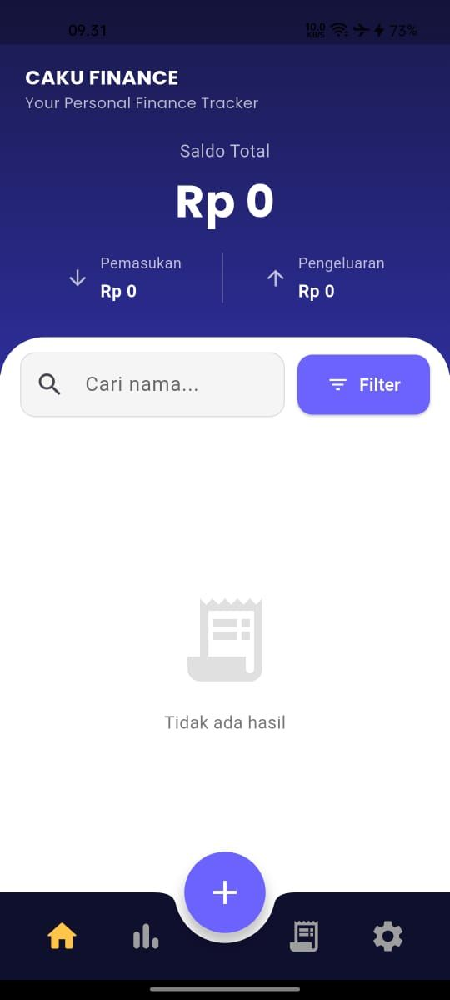
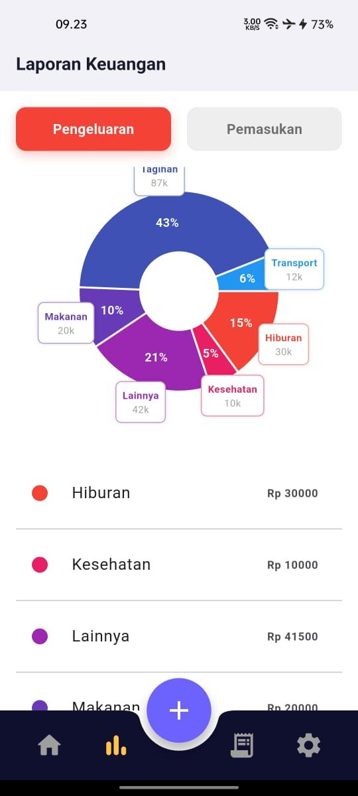
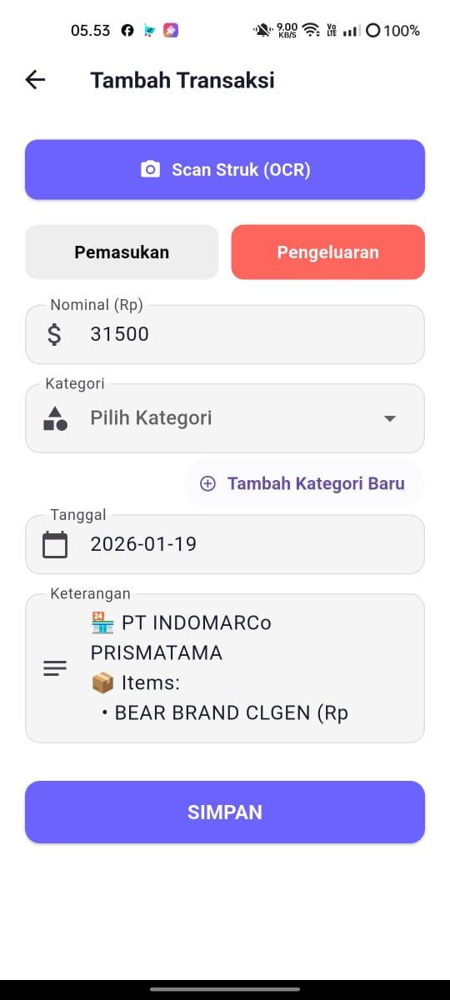
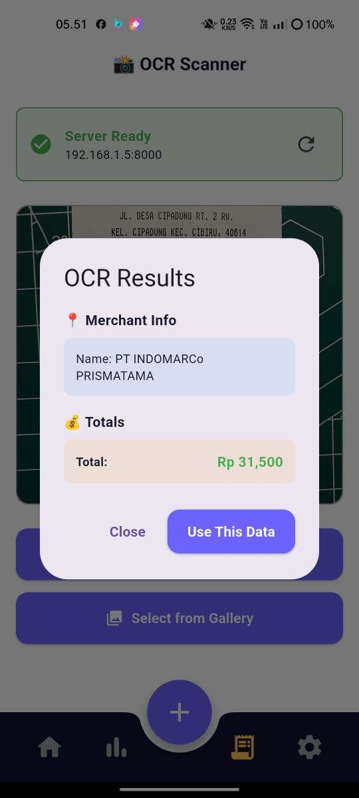
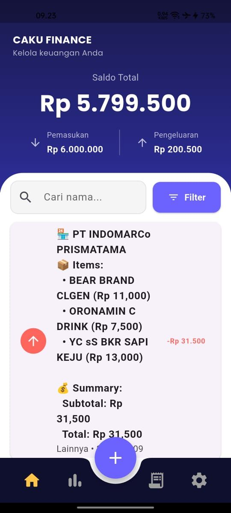
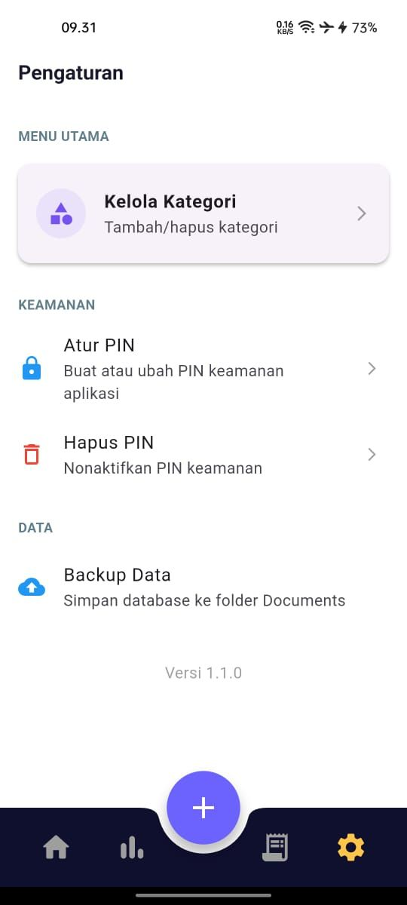

Project documentation — № 02
Caku Finance
Personal finance tracker with on-device receipt OCR — point the camera at a receipt, get a categorized transaction.

Project documentation — № 02
Personal finance tracker with on-device receipt OCR — point the camera at a receipt, get a categorized transaction.
Caku Finance is a personal finance tracking app built around one idea: manual expense entry is where budgeting apps die. Instead, you photograph the receipt. YOLOv8 detects the receipt region in the frame, EasyOCR reads the text, and the parsed items land in the app as an editable transaction.
Around that core sits a complete finance app: expense and income tracking with a total balance overview, visual reports, customizable categories, PIN security, and database backup. The Flutter frontend talks to a FastAPI backend, and SQLite keeps everything offline-first.
Camera capture — YOLOv8 finds the receipt region, EasyOCR extracts the text automatically.
Spending and income recorded per category with a running balance.
Pie chart of the expense breakdown: Tagihan, Makanan, Transport, Hiburan, Kesehatan.
Add and manage categories with colorful icons.
Find any transaction quickly by text or filters.
PIN protection plus database backup to the Documents folder.





